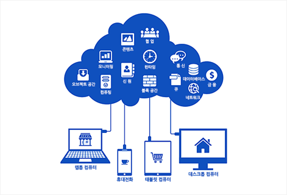

클라우드 서비스는 편리하다. 문서를 저장해두면, 어떤 환경이든 어떤 기기든 인터넷만 되면 바로 꺼내 볼 수 있으니까.
근데 이 편리함에 경종을 울린 사건이 하나 있었으니, 바로 애플의 제로데이 사태다. 그 이후로 나는 좀 더 안전한 클라우드 서비스를 찾는 데 몰두했다. 핵심은 종단간 암호화와 분산 저장. 최근에 추가한 건 유비키 암호화다.
1. 프로톤 드라이브 — 회사도 못 보는 파일
프로톤 드라이브처럼 종단간 암호화를 제공하는 클라우드는, 정부가 자료 공개를 요청해도 프로톤 직원조차 내용을 볼 수 없다. 모든 파일이 애초에 암호화된 채로 저장되기 때문이다. 회사가 안 보여주는 게 아니라, 회사도 볼 방법이 없는 거다.
2. 근데 거기서 만족하면 보안 게이의 예의가 아니지
맥북에서 암호화된 디스크 이미지를 하나 만들고, 그 안에 유비키로 암호화한 파일을 넣는다. 완성된 파일을 통째로 넣는 게 아니라, 중요 문서를 반으로 쪼개서 절반만 넣는다. 나머지 절반은 또 다른 클라우드에 따로 저장한다.
이렇게 겹겹이 쌓아 놓은 암호를 전부 뚫고 내 문서를 보려면, 계산상 수 조 원에서 수십 조 원이 든다. 혹은 몇 조 년이 걸리든가. 둘 중 뭐가 됐든, 그 돈이면 그냥 나한테 직접 물어보는 게 훨씬 싸게 먹힐 거다.
3. 그럼 애플은 이제 안전한가?
애플도 제로데이 사태 이후 정신을 차리고 고급 데이터 보호(Advanced Data Protection)나 FileVault 같은 기능을 내놨다. 근데 애플처럼 큰 대기업일수록 오히려 그게 약점이 된다.
실제로 영국 정부가 아이클라우드 데이터에 백도어를 열어달라고 요구했을 때, 애플은 굴복하는 대신 영국에서 고급 데이터 보호 기능 자체를 꺼버리는 쪽을 택했다. 정부 요청에 굴해야 하는 순간이, 이번이 마지막이 아닐 수도 있다는 뜻이다. 큰 회사는 큰 만큼 정부 앞에서 협상 카드가 많지 않다.
4. 그래서 정리하면
구글 드라이브는 쓰지 마라. 그리고 중요하지 않은 파일이나 문서라면, 메가(Mega) 드라이브를 추천한다. 종단간 암호화는 아니지만, 로그인할 때 유비키로 한 번 잠글 수 있기 때문이다.
그래도 가장 추천하는 건 역시 프로톤 드라이브다. 애플의 보안은, 이 글에 적어둔 정도만 참고하고 각자 알아서 판단하시길.